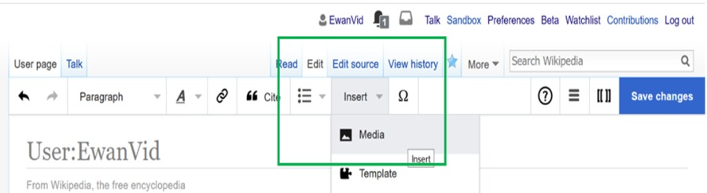

How do I insert ?
Go to the Upload Wizard on Wikimedia Commons. You can always get to it from the Upload file link in the menu on the left. On the first page of the wizard, read the illustration to understand whether Wikimedia Commons can accept your upload. When you're ready to upload, click Next near the end of the page. Click Select media files to share and find the image or images you want to upload from your computer. Licensing your file Click Continue and select the options that apply to your upload, as prompted. When you are done, click Next. More information » Organizing and describing your upload Enter a title for the image. Use plain, descriptive language. Then enter a description of the image and the date it was created. Help organize Wikimedia Commons by assigning categories to your file. When you are done, click Next.
 Any other queries